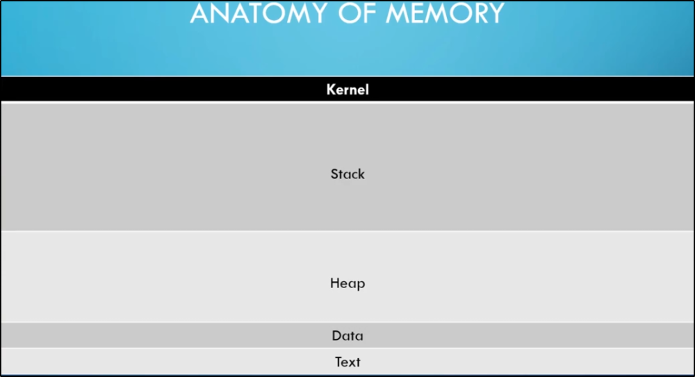
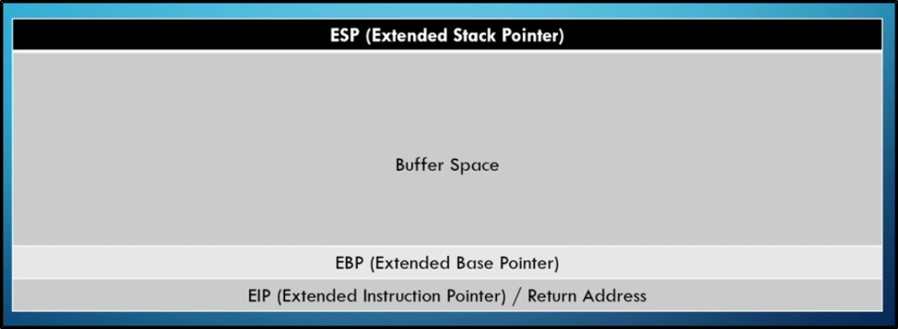
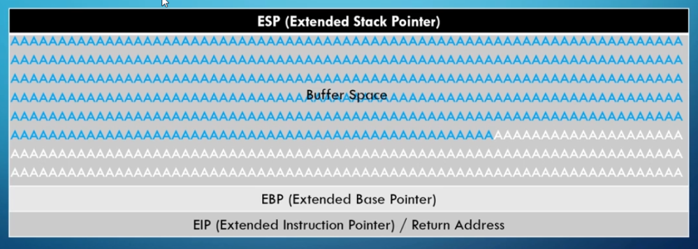

Buffer Overflow


Anatomy of Stack

The Buffer Space contain all the chars we send:

If we send more chars than Buffer Space size, we can overwrite the EIP and point to an instruction we want,
like malicious code that give us reverse shell

Steps to get a Buffer Overflow: